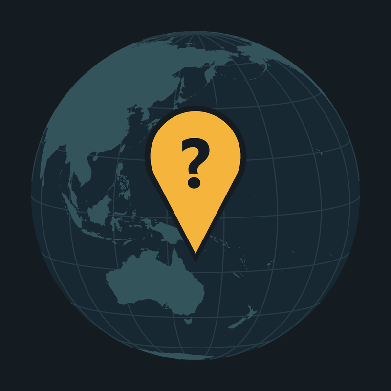

Geography Untangled
Why the world looks the way it does, explained with real maps.
Each video takes one question about a surprising place and answers it step by step, with real maps, real footage and sources for every fact.
Latest episodes

How Big Is Australia? 3.5 Times the Size of Greenland28 Oct 2026

What's Really Under Yellowstone?26 Oct 2026

How Did the Great Lakes Form?24 Oct 2026

Why Is Australia So Flat?21 Oct 2026

Why Is the Grand Canyon So Much Younger Than Its Rocks?19 Oct 2026

Could the 2026 El Niño Make Australia's Summer Hotter and Drier?17 Oct 2026
All episodes, with their sources and credits
Geography Untangled Studio
Geography Untangled Studio is the channel's own publishing tool. It runs only on the channel owner's computer and uses Google's YouTube APIs to fill in the channel's own video details and read the channel's own statistics. It is not offered to anyone else.